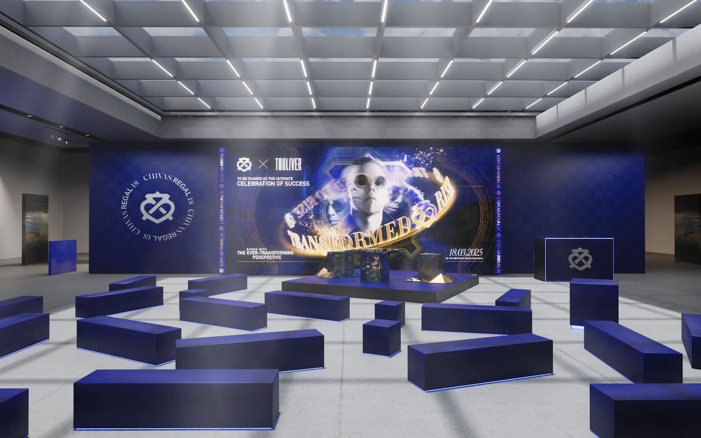

Về chúng tôi
Chúng tôi làm 3D
như làm nghệ thuật thị giác
LXAM Studio là một studio visual 3D ở Việt Nam. Chúng tôi làm TVC, render sản phẩm, phối cảnh sự kiện và animation kỹ thuật, rồi dạy lại đúng cái nghề đó. Mục tiêu dài hạn thì chỉ có một: đưa tên Việt Nam lên bản đồ 3D motion art thế giới.
10
Năm làm 3D & Multimedia
7
Kỹ năng trong lộ trình
1:1
Kèm trực tiếp, không lớp đông
12
Tháng đồng hành sau khoá
Thứ chúng tôi đuổi theo
Việt Nam không thiếu người có mắt
Thiếu là một chỗ để luyện con mắt đó thành nghề. Và thiếu người đủ lì để không hạ chuẩn khi thị trường trả giá thấp, thứ làm hỏng nhiều người giỏi hơn cả sự thiếu tài năng.
Trong ngành hình ảnh, cái tên Việt Nam thường xuất hiện ở ô “nhân sự gia công”, hiếm khi ở ô tác giả. Không phải vì tay nghề, mà vì hiếm ai ở lại đủ lâu với một tiêu chuẩn để tạo ra thứ người khác phải nhìn hai lần.
Chúng tôi muốn đổi cái ô đó. Không phải bằng khẩu hiệu, mà bằng cách làm từng shot đúng đến mức không cần hỏi nó được làm ở đâu, và bằng cách để lại cách làm đó cho lớp sau.
Quan điểm
Phần mềm chỉ là cái đục
Một người mới thường nghĩ nghề này là nghề học phần mềm. Học hết Blender là xong. Nhưng phần mềm chỉ làm được đúng một việc: biến ý định thành pixel. Nó không có ý kiến gì về việc ý định đó có đáng hay không.
Thứ quyết định một khung hình đứng được là những thứ không có nút bấm: ánh sáng đặt ở đâu, để lại bao nhiêu bóng tối, chuyển động chậm lại ở nhịp nào, và biết dừng lại đúng lúc. Bớt đi thường mạnh hơn thêm vào, nhưng phải làm hỏng vài chục lần mới tin được điều đó.
Vì vậy chúng tôi không tự gọi việc mình làm là “làm 3D”. Gọi đúng hơn là nghệ thuật thị giác: dùng hình để nói một điều gì đó, và dùng công cụ nào cũng được miễn nói được.
Cái đó khó dạy hơn phím tắt rất nhiều, và cũng là lý do duy nhất khiến việc mở lớp đáng làm. Phím tắt thì YouTube có sẵn, miễn phí, và dạy tốt hơn chúng tôi.
Founder
Lê Xuân Anh Minh · TP. Hồ Chí Minh
Lê Xuân
Anh Minh
Founder & Creative Director · LXAM Studio
Tôi không nghĩ mình đang làm 3D. Tôi đang dùng hình để nói một điều gì đó, và phần mềm nào cũng được, miễn nói được.
Vào nghề sớm hơn dự định, năm ba đại học, công cụ trong tay chỉ có Blender và vài phần mềm Adobe. Không studio đứng sau, không ai cầm tay chỉ việc. Mọi thứ học được đều đến từ việc nhận job, làm hỏng, sửa, rồi làm lại cho tới khi khách gật đầu.
Mười năm sau là một team Multimedia trong phòng Marketing cần dẫn dắt, song song với LXAM Studio nhận các dự án TVC và hình ảnh thương mại. Hai vai trò đó nuôi nhau: con mắt của người duyệt bài cho biết một portfolio còn thiếu gì, còn việc trực tiếp làm job giữ cho bài giảng không dạy những thứ đã lỗi thời.
Điều dẫn tới việc mở lớp không phải vì thiếu khoá học Blender trên mạng, có quá nhiều là đằng khác. Mà vì gần như không khoá nào trả lời được câu hỏi thật sự khó: làm sao đi từ chỗ biết dùng phần mềm đến chỗ có người trả tiền cho sản phẩm của bạn.
Hệ triết lý
Bốn điều đặt nền cho mọi thứ chúng tôi làm
01
Phần mềm chỉ là cái đục
Công cụ làm được đúng một việc: biến ý định thành pixel. Nó không có ý kiến gì về việc ý định đó có đáng hay không. Thứ quyết định một khung hình đứng được là những thứ không có nút bấm.
02
Bớt đi thường mạnh hơn thêm vào
Một nguồn sáng đặt đúng chỗ ăn đứt sáu nguồn đặt cho đủ. Nhưng phải làm hỏng vài chục lần mới thật sự tin được điều đó, nên nó là thứ phải luyện chứ không phải thứ để nghe.
03
Không hạ chuẩn theo giá
Thứ làm hỏng người giỏi trong ngành này hiếm khi là thiếu tài năng. Thường là quen tay với mức vừa đủ để khách duyệt. Một tiêu chuẩn chỉ có giá trị khi nó không đổi vào ngày ngân sách thấp.
04
Dạy lại đúng cái nghề đang làm
Bài giảng lấy chất liệu từ job đã lên sóng, kèm cả phương án bị khách gạt đi và lý do. Không dạy quy trình trong sách, vì quy trình trong sách không có đoạn khách đổi ý ở phút cuối.
Cách chúng tôi dạy
Bốn nguyên tắc, không thoả hiệp
Học bằng dự án, không học bằng nút bấm
Mỗi kỹ năng gắn với một sản phẩm cụ thể bạn phải hoàn thành. Bạn không xem tôi làm rồi gật đầu. Bạn làm, tôi sửa, bạn làm lại. Kết thúc lộ trình bạn cầm về portfolio, không phải một xấp file bài tập.
Sửa bài đến nơi đến chốn
Feedback không dừng ở "đẹp rồi" hay "chưa ổn". Mỗi lần sửa là chỉ rõ sai ở đâu, vì sao sai, và sửa thế nào, kèm file so sánh trước/sau để bạn thấy được sự khác biệt bằng mắt chứ không phải bằng lời.
Blender thuần: chi phí phần mềm bằng 0
Toàn bộ lộ trình chạy trên Blender, phần mềm miễn phí và mã nguồn mở. Bạn không cần license vài chục triệu để bắt đầu. Khi cần, chúng tôi bổ sung công cụ hậu kỳ, nhưng lõi nghề nằm ở tư duy, không nằm ở giá phần mềm.
Dạy cả phần không ai dạy
Báo giá thế nào, nhận brief ra sao, xử lý khi khách đổi ý ở phút cuối, cách trình bày một shot để người duyệt hiểu ngay. Đây là phần quyết định bạn sống được với nghề hay không, và gần như không có trên YouTube.
Studio làm gì
Job thật nuôi bài giảng
LXAM Studio nhận dự án hình ảnh và TVC thương mại: dựng sản phẩm hard-surface, lighting và rendering, animation, phối cảnh sự kiện, hậu kỳ. Những dự án này không nằm ngoài lớp học, chúng chính là chất liệu của bài giảng.
Khi bạn học lighting, cái bạn mổ xẻ là file lighting của một shot đã lên sóng, kèm cả những phương án bị khách gạt đi và lý do. Đó là thứ một khoá học đóng gói sẵn không có.
Xem portfolio studio
Một ngày nào đó có người ở Paris, Tokyo hay New York mở một shot lên và hỏi ai làm cái này, câu trả lời là một cái tên Việt Nam.
Chúng tôi làm việc cho ngày đó. Từng shot một, từng học viên một. Nếu bạn muốn đi cùng, cứ để lại thông tin, tôi sẽ xem qua và nói thẳng bạn nên bắt đầu từ đâu, kể cả khi câu trả lời là “chưa cần học vội”.